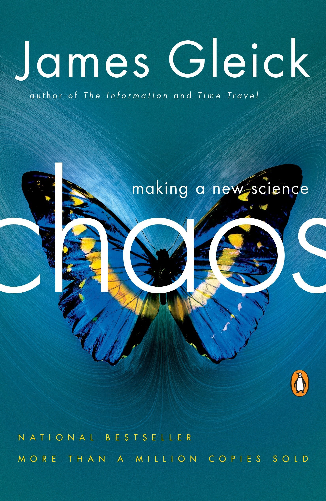

Eu Gabriel MultimídiaAluno de Engenharia de Informação da UFABC
Salve! Meu nome é Gabriel e nessa página você encontrará algumas informações acerca do BELÍSSIMO jovem mostrado na imagem acima.
Aqui deixo a recomendação de dois livros. O primeiro, O Mundo de Sofia, mudou completamente as minhas perspectivas em
relação à Filosofia e sua importância para construção da Ciência da maneira como conhecemos hoje. O segundo, traz brevemente
a história da chamada Teoria do Caos (que tem relação com o artigo listado ao final da página).

Como recomendação de série, deixo um curso de Álgebra Linear (para maratonar), ideal para quem curte chorar no banho
(e Machine Learning).